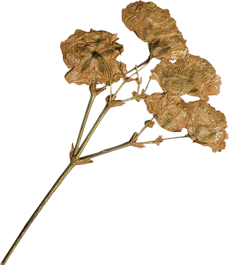
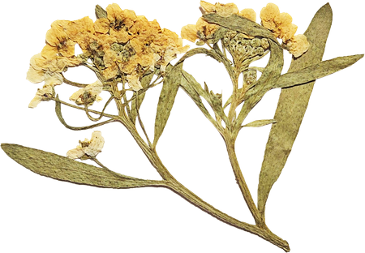
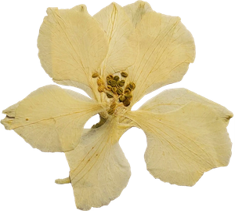

Manual dos
Padrinhos
Luiz e Thamiris
07 . 11 . 2026

Padrinhos
Para vocês, um clássico que nunca erra: todos no mesmo traje, alinhados e elegantes ao nosso lado.

Madrinhas
Queremos vocês de
rosa
,
vermelho
ou
laranja
! Não tem tom definido, nem tecido: escolham o que fizer cada uma se sentir mais à vontade.
Rosa · Vermelho · Laranja
Obrigado por
estarem ao nosso lado.
Ter vocês com a gente no altar é um presente. Qualquer dúvida sobre o traje, é só chamar!
7 de novembro de 2026 · 4:30 PM
Igreja do Sertão do Rio Bonito · Braço do Norte
WhatsApp (48) 99958-4582